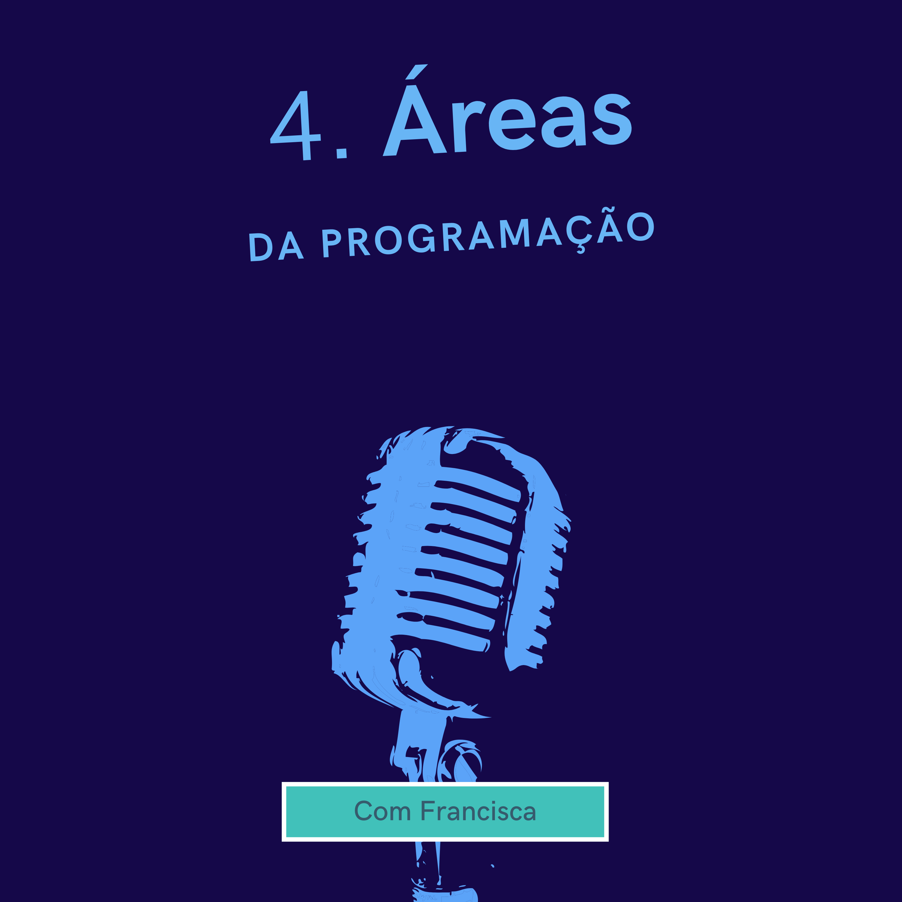
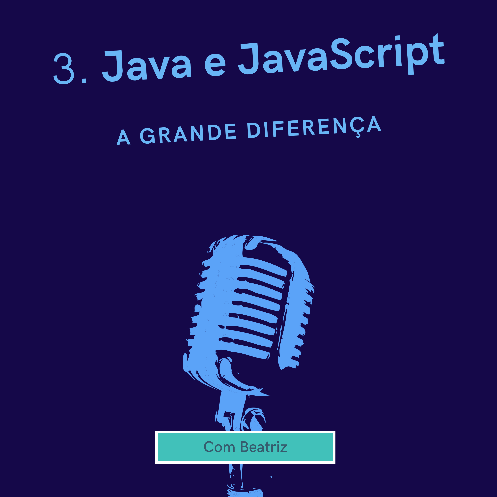

Saluton e bem vindo! Aqui você encontrará áudios curtos sobre programação, desde dicas para entrar nessa área até coisas mais nichadas. Então pegue seu cafézinho e vamos codar!
-
 Áreas da programação | Apres. por Francisca
Nesse programa de 2 minutos, fique por dentro de todas as áreas que um programador pode atuar.
-
 Java e Javascript, a grande diferença | Apres. por Beatriz
Descubra nesse aúdio de 2 minutos as semelhanças e particularidades entre Java e Javascript.
-
Java e Kotlin, a grande diferença | Apres. por Vitória
Nesse programa de 2 minutos, entenda a influência do Java e seu "concorrente" mais moderno, o Kotlin.
-
Começando na programação | Apres. por Dorothy
Nesse podcast de 3 minutos, Dorothy dá as primeiras dicas para iniciar nessa área tão promissora e atual.